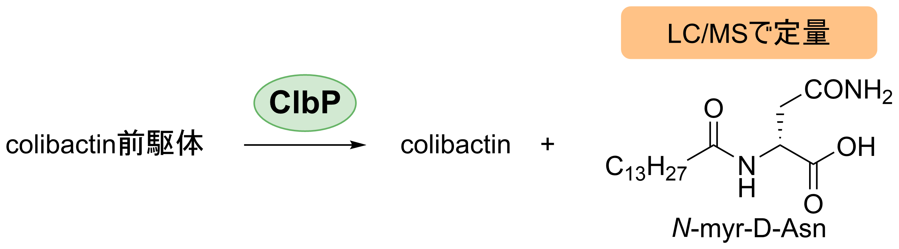

当社は、コリバクチン生合成経路における特異的な副産物であるmyr-Asn（ミリストイルアスパラギン）を標的としたLC/MS定量解析技術を提供しています。myr-Asnは、clb陽性菌株がコリバクチンを産生する際に特異的に生成される安定な化学物質であり、その量を解析することで、コリバクチン毒素の産生量を間接的に定量化することが可能です。本サービスは、異なる陽性菌株間での毒力比較に最適です。
本サービスでは、高性能液体クロマトグラフィー（LC）と質量分析（MS）を組み合わせた技術を使用し、サンプル中のmyr-Asnを高精度に検出・定量化します。この副産物は、コリバクチン生合成経路の特異的マーカーとして機能し、その定量結果を基にコリバクチン毒素の相対的産生量を推定します。この方法は、化学的に安定なmyr-Asnを測定対象とするため、再現性が高く、信頼性に優れています。
myr-Asnをターゲットとすることで、他の代謝物や背景ノイズの影響を最小限に抑えた高精度な解析が可能です。
myr-Asnは化学的に安定であり、測定の再現性が高いため、正確な比較分析を実現します。
本技術は、clb陽性菌株間の毒力比較に適しており、研究者が菌株の特性をより深く理解するための有力な手段となります。
菌体や抽出済みの代謝物サンプルを受け付けています。未処理サンプルの場合、当社が必要な前処理を実施します。
高性能LC/MS装置を用いてmyr-Asnを高感度で検出し、サンプル中の濃度を定量化します。
測定結果に基づき、コリバクチン産生量を推定します。また、必要に応じて菌株間の比較データも提供可能です。
測定結果と解析内容をわかりやすいレポート形式でお届けします。追加の解析リクエストにも対応いたします。
当社のLC/MS定量解析サービスは、コリバクチン毒素の産生量評価や菌株特性比較を行うための高精度な手法を提供します。研究用途や応用分野についてのご相談やお見積もり依頼は、ぜひお気軽にお問い合わせください。